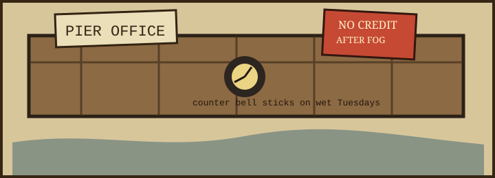

Ledger leaf found under the brass bell. The left edge is chewed by salt, not mice. Use the tide ticket rack for money; use this page for rules.
| drawer slot | object | office use |
|---|---|---|
| A-1 | blue pencil, blunt | marks paid fares when the ink sweats off the ticket. |
| A-2 | bell key | unlocks the clapper only for fog route and mail sack arrivals. |
| B-4 | three nickels taped together | counterweight for the sliding window after north wind. |
| C-7 | rubber stamp: RECEIVED WET | applies to bait, envelopes, apologies, and once to a hat. |
Window hours: 05:40 until the second ferry bell; 13:10 until gulls occupy sill; emergencies by knocking twice on the lower pane.